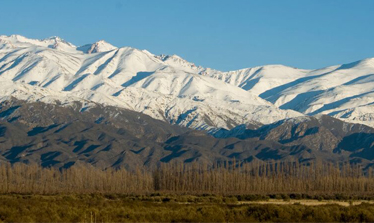
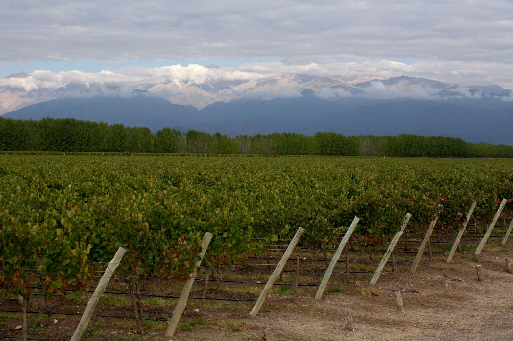
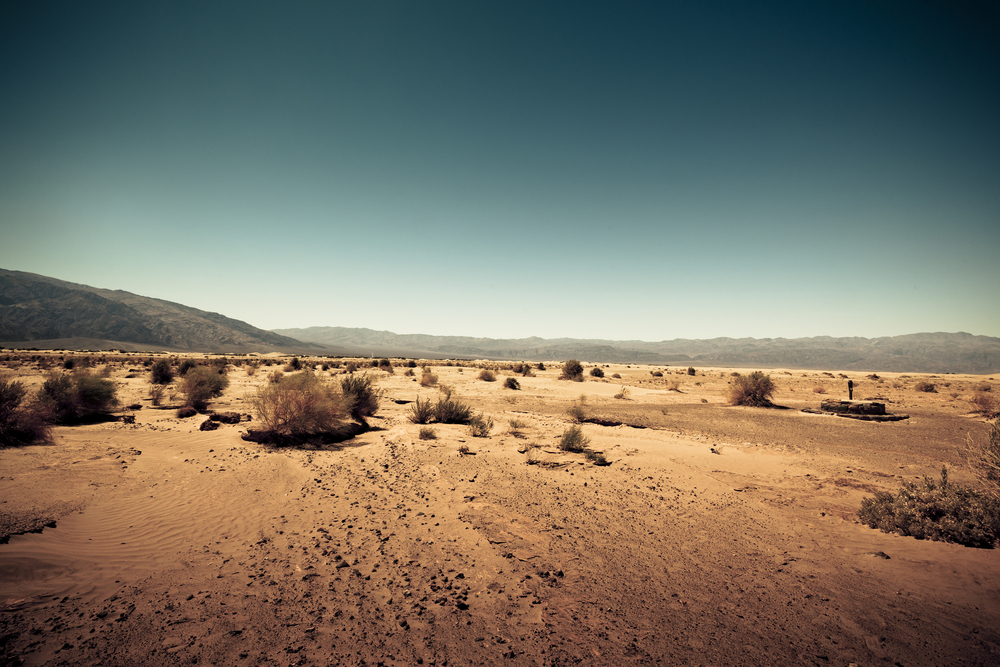

Las tres fincas se ubican entre los 1.050 y 1.700 metros de altura. En la finca San Pablo se encuentran los viñedos más altos de la provincia, y algunos de los más altos del mundo. La gran altitud de las fincas presenta dos ventajas centrales: el agua y las temperaturas.
El clima de las fincas es continental y monzónico, es decir, seco y soleado, prácticamente todos los días del año. Los niveles anuales de precipitaciones son bajos: 204 milímetros en promedio, principalmente en verano. Suele nevar en promedio tres veces por año, en invierno. Este clima hace que las uvas crezcan sanas, y evita que necesiten tratamientos para enfermedades ocasionadas por la humedad o los insectos.
Las fincas de Bodegas Salentein son regadas con agua pura del deshielo de los Andes, proveniente directamente de los arroyos o de las napas que se encuentran debajo de los viñedos. La claridad y pureza del agua produce un pH bajo en la uva, una mayor acidez y vinos con más color y potencialidad de guarda.
Los suelos de las tres fincas varían, pero en general son aluvionales, arenosos y están ubicados sobre un lecho de piedras. Estas características facilitan la permeabilidad y el drenaje. Estos factores permiten que, a través de un riego regulado, Bodegas Salentein pueda controlar tanto el vigor de la vid como la calidad de la uva.
